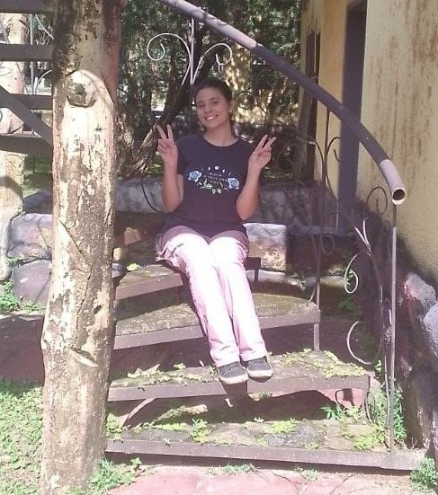
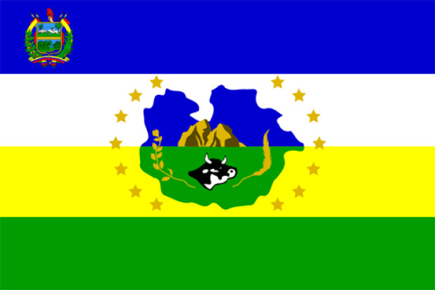

About Me
Hello, my name is Oriana! I am a student at BYU-Idaho University. I am studying Software Engineering. I am a member of the Church of Jesus Christ of Latter-day Saints. In my free time I enjoy reading and listening music.

Guarico, Venezuela

Guarico is one of the 23 states of Venezuela. The state capital is San Juan de Los Morros, and the largest city is Calabozo. Other important city centers include Valle de la Pascua and Zaraza. Agriculture is the main economic activity in this state. Guárico also occupies a significant place in the cultivation of cereals such as rice, corn, and sorghum. During the war of independence, several battles took place in the region of Guarico.